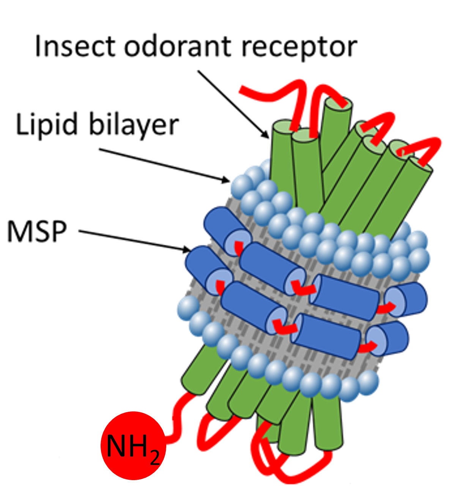
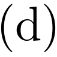
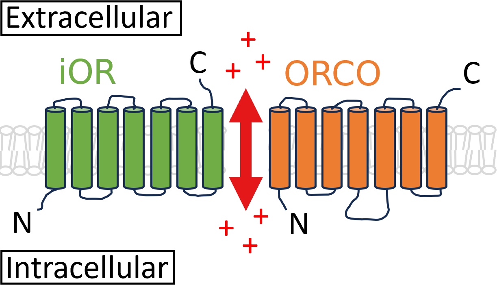

| Attachment Type | Simplicity | Synergy | Specificity | Stability | Strength |
|---|---|---|---|---|---|
| Direct Adsorption | High | Medium | Low | Low | Low |
| Linker, covalently tethered | Medium | Low | High | High | High |
| Linker, non-covalently tethered | Medium | High | Medium | Medium | Medium |
Biosensing with Insect Odorant Receptors
Introduction
In ?@sec-thin-film-transistors, it was established that as carbon nanotubes and graphene are extremely sensitive and are easily modified with biomaterials, they are a highly suitable platform for biosensing [@Kauffman2008; @Ohno2010]. In the early 2000s, it was established that sensitive and selective biosensors could be created by modifying a carbon nanotube field-effect transistor channel with protein receptors [@Chen2003; @Kauffman2008]. In the following two decades, a wide range of other biological receptors have been attached to carbon nanotube FETs and graphene FETs for the creation of biosensors, including enzymes [@Lee2009; @Zhang2015a; @Dudina2019], antibodies [@Kim2008; @Jin2015; @Tsang2019] and aptameric DNA [@Maehashi2007; @Gao2016; @Nguyen2021]. These miniaturised “lab on a chip” devices are of particular interest due to their reliability, low cost, rapid use time, simple operation and small size compared with alternative spectroscopic or fluorescence-based sensing methods [@Khan2020]. It is hoped that such sensors could be deployed outside the laboratory in a range of front-line settings which require rapid and reliable detection [@Dung2018; @Yang2018; @Kim2022a].
Rapid developments in this biosensor technology and parallel developments in the understanding of animal olfaction led to these transistors being used in bioelectronic nose applications from the late 2000s onwards [@Yoon2009; @Jin2012; @Lee2012b; @Park2012]. “Bioelectronic nose” is a general term dating back to 1961, which refers to the use of an biologically-modified electronic array to detect specific odor traces in a highly selective and sensitive manner. As the name suggests, the signals from this system mimic the electrochemical signals received by olfactory neurons in an animal nose [@Glatz2011; @Dung2018]. A biomimetic approach to bioelectronic nose development couples the CNT FET or GFET signal-amplifying transducer element with sensitive components of the animal olfactory system. These components include olfactory cells [@Wang2007], odorant binding proteins (OBPs) [@Larisika2015; @Kotlowski2018] and odorant receptor proteins (olfactory receptors, ORs) [@Yang2018; @Murugathas2020]. An bioelectronic nose can discern specific volatile odors in the air at low parts-per-trillion concentrations [@Lee2010; @Moon2020]. This performance is far superior to commercially-available vapour-phase sensors, which are at best only responsive down to parts-per-billion concentrations [@GasDetector1; @GasDetector2]. The aim for novel olfactory-based electronic biosensors is to match or surpass this level of selective accuracy to volatile organic vapours [@Glatz2011; @Kwon2015; @Dung2018; @Bohbot2020; @Kim2022a].
Odorant Receptors in Field-Effect Transistor Biosensors
Odorant Receptors
Odorant receptors (ORs) are an essential part of the olfactory systems of most animals, including humans. ORs let us distinguish between thousands of odors [@Buck1991; @Dung2018; @Yang2018; @Kim2022a]. Vertebrate odorant receptors are part of a group of seven-transmembrane proteins known as G-protein coupled receptors (GPCRs) [@Buck1991; @Glatz2011; @Dung2018; @Wicher2021]. Compounds entering a vertebrate nose selectively bind to specific odorant receptors, which undergo a change in conformation [@Dung2018; @Kim2022a]. The binding process leads to activation and dissociation of the G-protein within the neuronal cell. Intracellular signalling events triggered by G-protein dissociation are converted to an action potential which is then transmitted to the brain [@Buck1991; @Glatz2011; @Zhang2021]. The combination of activated receptors is then interpreted as a specific odor [@Sato2014; @Kwon2015; @Hurot2020; @Kim2022a]. Odorant receptors may be activated by a few or many target (or “agonist”) compounds. The target compounds are determined by subtle differences in OR amino acid composition [@Carraher2015; @Yang2018; @Goodwin2021]. An “antagonist” compound may inhibit the response of a receptor to other compounds [@Lee2012; @Carraher2015]. Compounds which trigger a strong signal from a specific odorant receptor are often referred to as “positive ligands” for that receptor, while those that cause no response are “negative ligands” [@Murugathas2019a; @Murugathas2020; @Yoo2022].
Artificial Membranes
Odorant receptors are transmembrane proteins, which are insoluble and tend to aggregate and oligomerise in solution [@Nath2007]. They therefore require stabilisation from either a specific detergent environment or a membrane layer to preserve their structure and function when solubilised [@Fruh2011; @Dung2018]. Odorant receptors can be expressed and isolated using heterologous cell systems, where a host cell replicates a protein from transfected RNA or DNA material [@Glatz2011; @Dung2018]. The most commonly used expression cells are human embryonic kidney (HEK) cells [@Lim2014; @Ahn2020], E. Coli bacteria [@Yang2017; @Yang2018] and S. cerevisiae (baker’s yeast) [@Bohbot2020]. The cell membrane can then be used directly in a sensor [@Dung2018]. Alternatively, odorant receptors can be embedded in an artificial lipid membrane format that mimics the native cell membrane [@Nath2007]. These membranes can be produced in large numbers and remain in storage for much longer than live cells [@Goldsmith2011; @Lim2015]. Lipid membranes are constructed from phospholipid molecules, which comprise of a small, hydrophilic, polar “head” and long, hydrophobic, non-polar “tail” [@Bose2021; @Ramadon2022]. These artificial membranes include detergent micelles, nanovesicles (including liposomes), and nanodiscs [@Yang2018; @Moon2020]. The small size of these artificial membranes makes them appropriate for use with nanomaterial-based transducers [@Lim2015; @Dung2018].
.png)
.png)

A nanovesicle is a nanoscopic spherical bilayer fluid sac. There are various types of artificial nanovesicles, including liposomes, ethosomes, transfersomes, niosomes and phytosomes. The type of nanovesicle depends on its chemical makeup [@Ramadon2022]. For example, a liposome is made up of phospholipid and cholesterol, and can consist of one or more concentric amphiphilic bilayers. The liposome can contain hydrophobic compounds within the bilayer due to hydrophobic interactions, while hydrophilic compounds are held within the vesicle core or interior [@Nath2007; @Ramadon2022]. A nanovesicle can be used solely as a format to protect membrane proteins [@Murugathas2020], or with the addition of integrated ion channels, can mimic the operation of a cell in vivo, with intracellular signalling pathways triggered by the membrane proteins [@Lim2015]. Nanomicelles (or simply micelles) are also nanoscopic and spherical, but unlike nanovesicles have no inner fluid sac [@Nath2007; @Bose2021]. Micelles self-assemble when phospholipid is mixed with detergent. The surface of the micelle is made up of the hydrophilic detergent and phospholipid heads, while the internal core is made up of the hydrophobic phospholipid tail [@Nath2007]. Hydrophobic compounds can be contained within the core of the micelle [@Bose2021]. Figure 1 (a) illustrates the difference between the liposome and micelle structures.
Nanodiscs have emerged as a model membrane candidate which has many advantages over the more traditional nanovesicle and micelle formats. The nanodisc is a disc-shaped lipid bilayer encompassed by an membrane scaffold protein (MSP), with structure pictured in Figure 1 (b) [@Nath2007; @Bayburt2010; @Yang2018]. The amphiphilic membrane scaffold protein protects the exposed, strongly hydrophobic side chains of the nanodisc in an aqueous environment [@Fruh2011; @Yang2018]. Unlike liposomes and micelles, there is little variation between the size of individual nanodiscs due to constraints placed on the bilayer by the encompassing scaffold protein used, meaning greater consistency within and between membrane batches [@Nath2007; @Fruh2011]. Nanodiscs have also been found to be significantly less prone to non-specific binding (see Section 1.4) than micelles [@Fruh2011]. Another advantage of nanodiscs is that the membrane scaffold protein can be attached to biosensor surfaces at specific affinity tags, for example, the scaffold protein hexahistidine tag (his-tag) [@Bayburt2010; @Fruh2011]. Depending on the type of MSP used, a nanodisc measures between 10-20 nm across and can hold either a single or several odorant receptors [@Nath2007; @Bayburt2010]. The protein coating of the nanodisc makes it particularly stable. The stability of nanodiscs means they can be used to produce particularly reliable and long-lived biosensor devices [@Goldsmith2011; @Yang2018; @Moon2020; @Cheema2021].
Sensor Functionalisation
For a bioelectronic nose to operate, sufficient coupling must exist between the bioreceptor element and the graphene or carbon nanotube channel of the field-effect transistor. Odorant receptors can be directly attached by physical adsorption; however, this approach is difficult to control, and can lead to weak coupling between the odorant receptors and the transducer [@Kwon2015; @Dung2018; @Bohbot2020]. Alternatively, a bifunctional linker element may mediate the attachment between functional groups of the bioreceptor and the transducer in a biochemical process referred to as “functionalisation” [@Star2003a]. Functionalisation may involve covalent or non-covalent bonding to the carbon-ring transducer surface. Covalent bonding is stronger than non-covalent bonding, and therefore gives a more permanent attachment between linker molecules and the transducer. Unlike covalent attachment, non-covalent attachment preserves the polycyclic \(sp^2\) bonding of carbon atoms in graphene and carbon nanotubes and therefore the electrical properties of the channel [@DiCrescenzo2014; @Yao2021; @Shkodra2021; @Li2023]. For example, one group found covalent bonding of diazonium linker caused a \(\sim 50\) % drop in graphene channel mobility [@Lerner2014]. In comparison, only a \(\sim 5\) % drop in mobility was seen for attachment of a mixture of linkers containing pyrene to a graphene channel via non-covalent pi-stacking [@Thodkar2021]. The relative advantages and disadvantages of each type of receptor immobilisation can be found in Table 1.
Table 2 summarises all published odorant receptor functionalised carbon nanotube and graphene field-effect transistor-based sensors to date. The majority of published works on this topic come from the Tai Hyun Park group at Seoul National University.
knitr::opts_chunk$set(echo = FALSE)
library(knitr)
or_table <- read.csv("tables/ch3/OR_biosensors.csv", sep=",")
or_table <- or_table[rowSums(is.na(or_table)) == 0,]
knitr::kable(or_table,
col.names = c("Attachment",
"Attachment Method",
"References",
"Transducer",
"OR Type",
"OR Format",
"LOD"), format = "simple") | Attachment | Attachment Method | References | Transducer | OR Type | OR Format | LOD |
|---|---|---|---|---|---|---|
| Non-covalent | Vacuum-drying | Kim, 2009. | CNTFET | Human | Cell membrane | 100 fM |
| DMT-MM | Yoon, 2009. | CNTFET | Human | Cell membrane | 10 fM | |
| PDL | Jin, 2012. | CNTFET | Human | Nanovesicles | 1 fM | |
| Park, 2012. | CNTFET | Dog | Nanovesicles | 1 fM | ||
| Lim, 2014. | CNTFET | Human | Nanovesicles | 10 fM | ||
| Lim, 2015. | CNTFET | Human | Nanovesicles | 1 fM | ||
| Son, 2015. | CNTFET | Human | Nanovesicles | 10 ng/L | ||
| Ahn, 2015. | CNTFET | Human | Nanovesicles | 1 fM | ||
| GA-conjugated DAN | Park, 2012. | GFET | Human | Cell membrane | 0.04 fM | |
| Lee, 2012. | CNTFET | Human | Cell membrane | 1 fM | ||
| Kwon, 2015. | GFET | Human | Cell membrane | 0.1 fM | ||
| Goodwin, 2021. | GFET | Human | Cell membrane | 0.5 pM | ||
| PBASE | Murugathas, 2019. | CNTFET | Nanodiscs | 1 fM | ||
| Murugathas, 2020. | GFET | Nanovesicles, Nanodiscs | 1 fM | |||
| Ahn, 2020. | GFET | Human | Nanovesicles | 100 fM | ||
| Yoo, 2022. | CNTFET | Human | Micelles | 1 fM | ||
| Covalent | Diazonium salt/Ni-NTA | Goldsmith, 2011. | CNTFET | Mouse | Micelles, Nanodiscs | ~7 ppb |
| Son, 2017. | CNTFET | Human | Micelles | 10 fM | ||
| Half-v5 mouse Ab | Lee, 2018. | CNTFET | Human | Nanodiscs | 1 fM |
The Park group has mainly focused on CNT FETs functionalised with human odorant receptors, but has used a range of different covalent and non-covalent transducer immobilisation techniques when producing the sensors. Dog and mouse odorant receptors have also been used, by the Park group and by Goldsmith et al. respectively. As far as the author knows, the Plank group at Te Herenga Waka \(-\) Victoria University of Wellington is the only group to have produced carbon nanotube and graphene field-effect transistors functionalised with insect odorant receptors. The behaviour of insect odorant receptors is significantly different to that of vertebrate odorant receptors, and their behaviour in sensor applications is currently not well understood. The distinction between vertebrate and insect odorant receptors is discussed in more depth in Section 1.3.
Three functionalisation linkers were used by both the Park group and a secondary research group: non-covalently attached glutaraldehyde (GA)-conjugated 1,5-diaminonaphthalene (DAN) [@Kwon2015; @Goodwin2021], non-covalently attached 1-pyrenebutanoic acid N-hydroxysuccinimide ester (PBASE) [@Murugathas2020; @Yoo2022], and covalently attached nickel-nitrilotriacetic acid (Ni-NTA) modified diazonium salt [@Goldsmith2011; @Son2017]. The bonding between the linker molecule and receptor element is typically covalent, regardless of the type of bonding that exists between linker and transducer. Interestingly, no single paper compares multiple possible functionalisation techniques directly, making it difficult to assess the relative quality of various attachment methods. The limit of detection (LOD) could be used as a rough measure of quality. The functionalisation procedure resulting in the lowest limit of detection used was non-covalent [@Park2012]. However, the quoted LOD is highly variable across the non-covalently functionalised devices. Furthermore, non-covalent functionalisation of odorant receptors has never been used for vapour sensing. The next section further explores the sensing behaviour of biosensors functionalised with the most commonly-used protocols.
Sensing Behaviour


.png)


.png)

.png)


Vertebrate odorant receptors have previously been coupled with nanovesicle ion channels for selective analyte detection [@Lim2015; @Dung2018]. Lim et al. synthesised nanovesicles featuring the human odorant receptor hOR2AG1, covalently coupled with a potassium ion channel and placed alongside an endogenous calcium ion channel. This configuration is shown in Figure 2 (a). These nanovesicles were attached to the carbon nanotube network of a thin-film device via charge-charge interaction with poly-D-lysine, demonstrated with the atomic force microscope image in Figure 2 (b). Binding of amyl butyrate to hOR2AG1 causes the OR to change conformation, opening the coupled potassium ion channel and causing ions to flow into the nanovesicle, resulting in transistor channel gating. The real-time signal responses associated with channel gating due to ion flow are shown in Figure 2 (c)-(f). Intracellular signalling by the odorant receptors means that target binding also activates the calcium ion channel, and so the presence of calcium ions is sufficient for a sensing response. In all electrolytes used to obtain a signal response, ions are present in high concentrations relative to analyte, ensuring ions are readily available for signalling processes. Without either potassium or calcium ions present, ion inflow cannot occur, so no conductance change is observed [@Lim2015].
Odorant receptors can also be expressed in the native cell membrane and attached directly to the biosensor channel. Here, the changes in odorant receptor conformation that result from analyte binding cause affects the distance between charges on the odorant receptor and the transducer channel, gating the channel [@Kwon2015; @Dung2018]. Kwon et al. functionalised graphene field-effect transistors with human odorant receptors hOR2AG1 and hOR3A1 using non-covalently attached 1,5-diaminonaphthalene (DAN) modified with glutaraldehyde (GA) as a linker, as shown in Figure 3 (a). The odorant receptors attach to the GA-modified DAN via a Schiff-base reaction [@Bhatt2021]. OR attachment was demonstrated by SEM imaging as well as a significant change in device resistance, shown in Figure 3 (b). Both hOR2AG1 and hOR3A1 showed real-time responses to their corresponding target analyte at sub-femtomolar concentrations, as shown in Figure 3 (c) and Figure 3 (d) respectively. No responses were seen from linker-modified graphene to the same analyte additions. The dose-dependent response curve of both these odorant receptor sensors is shown in Figure 3 (e). As in Figure 2 (d), the response behaviour follows a curve which can be described using a Langmuir surface adsorption isotherm, with saturation behaviour observed with picomolar additions.
Biosensors have also been produced where odorant receptors are held in a detergent micelle format instead of the native cell membrane. The mechanism behind sensing is the same as for odorant receptors in the cell membrane, where a conformational change in the odorant receptors leads to channel gating [@Dung2018; @Yoo2022]. Yoo et al. functionalised random-network CNT FETs with detergent micelles which contained human odorant receptor hOR2T7. PBASE was used as the linker molecule, which attaches to the odorant receptor via its amine group and non-covalently tethers it to the transducer, illustrated in Figure 4 (a). Successful immobilisation was demonstrated by a raised atomic force microscope height profile after receptor attachment (Figure 4 (b)) and an on-current drop in the liquid-gated transfer characteristics of the device (Figure 4 (c)). The sensor showed sharp real-time responses to the addition of DMMP concentrations, as seen in Figure 4 (d). The dose dependence curve for DMMP responses is shown in in Figure 4 (e), again showing a Langmuir-type response curve to successive DMMP additions. Various analytes with a similar scent to DMMP were added at high concentrations to the liquid-gate, shown in Figure 4 (f). No response was seen to any these additions, demonstrating the selectivity of the sensor.


In the first study of its kind, Goldsmith et al. demonstrated that a single-CNT device functionalised with mOR174-9 odorant receptors in either a micelle or nanodisc format could be used as a vapour-phase biosensor. Micelle immobilisation was confirmed using atomic force microscopy, as shown in Figure 5 (a). The mOR CNT FETs were exposed to nitrogen flow at 50% relative humidity. The conductance across the channel was measured while a specific concentration of the positive ligand eugenol was added to the constant flow for 100 s, then removed from the flow for 100 s. This cycle was repeated five times. Figure 5 (b) shows that a \(\sim\) 9% increase in current was observed during each cycle of exposure to eugenol. The device still responded to eugenol cycles after 69 days of storage in 25% (v/v) ethanol at 4 °C. This persistent activity may result from the long-lived nanodisc format used [@Goldsmith2011]. As far as the author knows, no study currently exists which investigates whether this behaviour can be replicated for the behaviourally-distinct insect odorant receptor devices. It is not clear that the vertebrate odorant receptors used here can simply be substituted for iORs for vapour-phase sensing.
Insect Odorant Receptor Field-Effect Transistor Biosensors
Insect Odorant Receptors
Insect odorant (or olfactory) receptors (iORs) are a diverse range of odorant-sensitive seven-transmembrane proteins located in the dendrite cells of insect sensory hairs, known as sensilla [@Clyne1999; @Carraher2015; @Brito2016; @Wicher2021]. When volatile compounds enter the sensilla, they are carried by odorant binding proteins (OBPs) through an aqueous environment to the dendrite cells [@Carraher2015; @Brito2016; @Wicher2021]. These cells possess a insect-specific set of “tuning” iORs alongside a generic co-receptor known as “ORCO” (Odorant Receptor Co-Receptor) [@Carraher2015; @Butterwick2018; @Khadka2019; @Wicher2021]. The ORCO co-receptor is insensitive to target compounds (aside from synthetic compounds like VUAA1). Instead, it couples with the tuning iOR to form a non-selective, permeable ion channel [@Butterwick2018; @Wicher2021]. When a compound binds to a tuning iOR, the ion channel opens to allow cations to travel across the cell membrane, activating intracellular signalling [@Smart2008; @Wicher2008; @Sato2008; @Carraher2015; @Brito2016; @Butterwick2018; @Wicher2021]. The combination of resulting OR signals is sent to the insect brain for interpretation as an odor [@Hallem2004; @Carraher2015; @Wicher2021]. The tuning iORs respond to (or are inhibited by) a huge variety of odors [@Munch2016]. The non-trivial binding behaviour of iORs with analyte means artificial neural network processing may be required for accurate readouts from a self-contained, lab-on-a-chip iOR biosensor [@Bachtiar2016].

Vertebrate odorant receptor proteins are terminated with an amine group outside the cell membrane, known as the N-terminus, and terminated with a carboxyl group inside the cell membrane, known as the C-terminus. Initially, iORs were thought to be similar in structure to vertebrate GPCRs [@Clyne1999], but is now known that iORs have a completely different topology and mechanism, despite also being a seven-transmembrane protein. The terminus configuration is inverted: the C-terminus of the iOR is extracellular, and the N-terminus is intracellular [@Smart2008; @Glatz2011; @Carraher2015; @Brito2016; @Wicher2021]. Furthermore, there is no sequence similarity between iORs and GPCRs. Evolutionarily, insect odorant receptors are thought to be closely related to insect gustatory receptors (GRs), while they bear no relation to GPCRs [@Glatz2011; @Carraher2015; @Wicher2021]. However, despite iORs not being GPCRs, some interaction between the iOR complex and the G-protein of the olfactory cell plays a role in odor detection in vivo [@Wicher2008; @Wicher2021]. The in vivo configuration of the odorant receptor on the cell membrane, showing the terminus configuration and location of ORCO ion channel, is illustrated in Figure 6. By testing sensors which incorporate insect odorant receptors, new information may emerge which helps us to better understand their atypical structure.
Sensor Functionalisation
Murugathas et al. attached a variety of insect odorant receptors to carbon nanotubes and graphene field-effect transistors using a nanodisc format. Figure 7 shows atomic force microscope images of a graphene monolayer before and after immobilisation of OR22a nanodiscs with PBASE linker in (a) and (b) respectively, while atomic force microscope images of a randomly deposited carbon nanotube network before and after OR22a nanodisc immobilisation with PBASE are shown in (c) and (d) respectively. Features are seen across the surface of the post-functionalisation image which are tens of nanometers in height. On the nanotube network, these features are seen directly next to nanotube bundles, indicating selective attachment to the nanotubes over the SiO\(_2\) substrate. As nanodiscs are only 10-20 nm in height, it appears that these features are large agglomerates of nanodiscs [@Nath2007; @Bayburt2010; @Murugathas2019a; @Murugathas2020]. As seen previously for a carbon nanotube network FET in Section 1.2, functionalisation occurs by non-covalent attachment of PBASE to the channel, and covalent attachment of the PBASE linker to the odorant receptor amine group. The nanodisc membrane also possesses amine residues [@Bayburt2010], so in some cases immobilisation may be directly between the PBASE linker and nanodisc membrane.

Functionalisation of a FET device channel with iORs significantly alters the transfer characteristics of that channel. Murugathas et al. found that successful functionalisation of a CNT FET device with iORs would typically increase the device on-current, increase its on-off ratio and cause a significant negative shift in threshold voltage, as shown in Figure 8 (a) [@Murugathas2019a]. Meanwhile, successful functionalisation of a graphene device with iORs would typically dramatically decrease the device on-current and cause a negative shift in Dirac voltage, as seen in Figure 8 (b) [@Murugathas2020]. These changes are not simply the result of linker attachment to the channel surface [@Murugathas2019a]. It is thought that the negative shift of both threshold and Dirac voltages are caused by the N-terminus amine groups on the odorant receptors or amine groups on the nanodisc membrane scaffold proteins donating electrons to the device channel, which has a similar effect to doping the channel with impurities [@Bradley2004; @Murugathas2019a; @Murugathas2020]. Note that very similar changes occur when functionalising with empty nanodiscs which contain no odorant receptors, shown in Figure 8 (c) and Figure 8 (d). Unless the odorant receptors attach preferentially to the network over nanodiscs, it appears the gating effect is predominantly due to the large-scale attachment of nanodisc membranes.
Sensing Behaviour
Figure 9 (a) and (b) show the respective responses of the OR22a-functionalised graphene FET and CNT FET to various concentrations of methyl hexanoate in real-time. This result demonstrates that iOR-FETs are sensitive down to the femtomolar scale in an aqueous environment. Figure 9 (c) and (d) compare the dose dependent responses to methyl hexanoate from multiple OR22a-functionalised devices to that of relevant controls. It was verified that the OR22a-functionalised devices would not respond to trans-2-hexan-1-al, the negative ligand for OR22a; it was also verified that empty nanodiscs would not respond non-selectively to the positive ligand [@Murugathas2019a; @Murugathas2020]. It is notable that unlike iORs in vivo, ORCO does not appear to be required for the bioelectronic nose to function [@Murugathas2019a; @Murugathas2020; @Khadka2019; @Cheema2021]. Furthermore, G-protein signaling pathways are not required [@Sato2014]. It has been proposed that the signal response results from the positive ligand binding to the iOR protein, causing a change in conformation, the same mechanism underpinning the behaviour of many of the vertebrate odorant receptor sensors seen in Section 1.2. Cheema et al. used neutron reflectometry to demonstrate that OR22a nanodiscs undergo a 1 nm height change after ethyl hexanoate exposure, likely resulting from a structural change [@Cheema2021].
This change most likely affects the channel in one of two ways. The first involves transfer of charge from the iOR to the channel, reducing I\(_{d}\) and causing a negative threshold voltage (or Dirac point) shift. Another could be a more indirect electrostatic gating effect from movement of charge within the Debye screening length of the channel. The Debye length of \(1 \times\) PBS buffer is typically much shorter than the height of a single nanodisc [@Murugathas2019a]. However, if structural changes in the iOR were primarily occurring at its base, it is still possible that the electrostatic gating could be the primary sensing mechanism. From further development and examination of iOR-based biosensors, new insights into the mechanisms underlying the nanodisc signal transduction may emerge [@Glatz2011]. As discussed here, the literature has primarily focused on the operation of iOR carbon nanotube and graphene FET biosensors in an aqueous environment [@Murugathas2019a; @Murugathas2020]. It is as yet unknown whether insect odorant receptors can operate in a vapour-phase environment, but this possibility is explored in this thesis.
Non-Specific Binding
Non-specific binding (NSB) refers to any attachment within the sensing environment not related to the specific analyte of interest [@Lichtenberg2019; @Shkodra2021]. Non-specific binding is particularly significant for protein-functionalised devices. Proteins may be spontaneously adsorbed onto carbon nanotube or graphene surfaces during functionalisation in a manner which is not linker-mediated [@Bradley2004; @Star2003a; @Chen2004]. Non-covalently bound proteins may detach and reattach to available surfaces in a non-specific manner when exposed to a high ionic strength electrolyte post-functionalisation [@Dung2018]. Non-specific binding may also result from protein-protein interactions, misoriented attachment of proteins, attachment to a sticky substrate [@Chen2004; @Lichtenberg2019]. It can also result from electrostatic binding to any charged surface present, such as the gold electrodes [@Garcia-Aljaro2010] or Ag/AgCl reference electrode [@Chen2004; @Minot2007; @Lichtenberg2019]. Liquid-gated graphene and carbon nanotube devices are highly sensitive to the approach of charge within the Debye length of the device channel, and so non-specific adsorption can lead to spurious signals during sensing [@Star2003a; @Chen2004; @Lichtenberg2019; @Shkodra2021]. A variety of measures can be taken to prevent NSB from occurring. Once bioreceptors have been attached to the channel, remaining exposed carbon nanotubes can be passivated with chemical coatings such as Tween-20 [@Chen2004], PEG [@Star2003a; @Lee2012b; @Gao2016; @Filipiak2018], and ethanolamine [@Maehashi2007; @Das2011].
Summary
Odorant receptors can be used to fabricate highly sensitive and selective biosensors using carbon nanotube and graphene field-effect transistors as the transducer element. Both vertebrate and insect odorant receptors are seven-transmembrane proteins, but each has a different sequence and have inverted terminus positions relative to the cell membrane wall in vivo. Insect odorant receptor detection in vivo differs significantly from vertebrate OR detection, with an ORCO-mediated ion channel involved. ORs can be held in the native cell membrane for sensor applications, but artificial lipid bilayer formats such as micelles, nanovesicles or nanodiscs are generally preferred due to their enhanced stability. Mammalian odorant receptors have been thoroughly explored in carbon nanotube and graphene field-effect transistor sensing applications, with both non-covalent and covalent functionalisation mechanisms used to create sensors which detect analyte at sub-femtomolar concentrations. The mechanisms behind sensing rely on transistor gating either due to ion flow into a nanovesicle format, or a conformational change in the odorant receptor. Covalently-attached mammalian odorant receptors have also been used for vapour-phase detection with a single carbon nanotube field-effect transistor device at concentrations down to \(\sim\) 7 ppb by Goldsmith et al.
Femtomolar detection of analyte has also been achieved with an insect odorant receptor functionalised device. However, the exact mechanism behind detection is unclear, as the presence of ORCO is not required for successful sensor behaviour. It is possible that the mechanism results from a change in conformation of the odorant receptor, similar to the mammalian odorant receptor. Due to the possible difference in mechanism between mammalian odorant receptor detection and insect odorant receptor detection, it is not clear that vapour-phase detection can be achieved by simply reproducing the work of Goldsmith et al. using insect odorant receptors. ?@sec-noncovalent-functionalisation looks further at various non-covalent functionalisation approaches for the creation of a insect odorant receptor-based field-effect transistor biosensor, while ?@sec-biosensing-iORs tests sensor behaviour in both aqueous and vapour-phase environments.